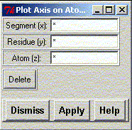

**************************************************************************
Plot axis widget
Leif Laaksonen CSC 2000
**************************************************************************
Using this widget it is possible to select atoms and plot the local coordinate system on the atoms. It is also possible to give the x, y and z coordinate where the local coordinate system is placed.
Give the atom(s) and press the "Apply" button.
The selection is additive which means that the new set is added to the old set.
The whole selection can be deleted by pressing the "Delete" button.

Line command: see plot command
**************************************************************************
LUL/2000
**************************************************************************